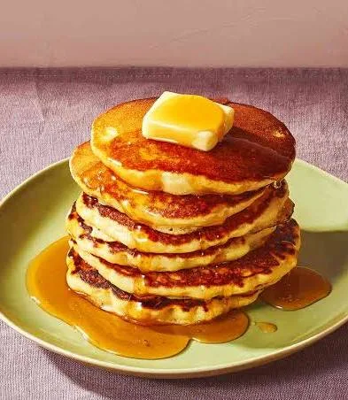

Fluffy Pancakes

Description
These fluffy pancakes are light, airy, and perfect for a weekend breakfast or brunch. Serve with syrup, fruit, or your favorite toppings.
Quick to make and always a crowd-pleaser!
Ingredients
- 1 cup all-purpose flour
- 2 tbsp sugar
- 1 tbsp baking powder
- Pinch of salt
- 1 cup milk
- 1 egg
- 2 tbsp melted butter
- Butter or oil for cooking
Steps
- In a bowl, mix flour, sugar, baking powder, and salt.
- In another bowl, whisk milk, egg, and melted butter together.
- Combine wet and dry ingredients until just mixed.
- Heat a skillet and add a little butter or oil.
- Pour batter onto skillet and cook until bubbles form. Flip and cook other side.
- Serve warm with your favorite toppings.